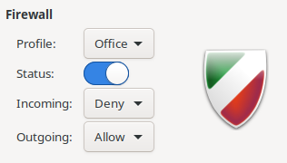

3 - Network Configuration#
3.1 - Disable unused network protocols and devices#
Remove IPv6 by setting in /etc/sysctl.conf:
net.ipv6.conf.all.disable_ipv6 = 1
net.ipv6.conf.default.disable_ipv6 = 1
Then run:
sysctl -w net.ipv6.conf.all.disable_ipv6=1
sysctl -w net.ipv6.conf.default.disasble_ipv6=1
sysctl -w net.ipv6.route.flush=1
Then disable wifi by running this script
source <(curl -s https://raw.githubusercontent.com/CAMSCSC/CIS-Breakdown/main/scripts/3.1.2.sh)
3.2 - Host Network Parameters#
Disable packet redirect sending by setting in /etc/sysctl.conf:
net.ipv4.conf.all.send_redirects = 0
net.ipv4.conf.default.send_redirects = 0
Then run:
sysctl -w net.ipv4.conf.all.send_redirects=0
sysctl -w net.ipv4.conf.default.send_redirects=0
sysctl -w net.ipv4.route.flush=1
Disable IP forwarding by running
grep -Els "^\s*net\.ipv4\.ip_forward\s*=\s*1" /etc/sysctl.conf /etc/sysctl.d/*.conf /usr/lib/sysctl.d/*.conf /run/sysctl.d/*.conf | while read filename; do sed -ri "s/^\s*(net\.ipv4\.ip_forward\s*)(=)(\s*\S+\b).*$/# *REMOVED* \1/" $filename; done; sysctl -w net.ipv4.ip_forward=0; sysctl -w net.ipv4.route.flush=1
3.3 - Host and Router Network Parameters#
In /etc/sysctl.conf set:
net.ipv4.conf.all.accept_source_route = 0
net.ipv4.conf.default.accept_source_route = 0
net.ipv4.conf.all.accept_redirects = 0
net.ipv4.conf.default.accept_redirects = 0
net.ipv4.conf.all.secure_redirects = 0
net.ipv4.conf.default.secure_redirects = 0
net.ipv4.conf.all.log_martians = 1
net.ipv4.conf.default.log_martians = 1
net.ipv4.icmp_echo_ignore_broadcasts = 1
net.ipv4.icmp_ignore_bogus_error_responses = 1
net.ipv4.conf.all.rp_filter = 1
net.ipv4.conf.default.rp_filter = 1
net.ipv4.tcp_syncookies = 1
net.ipv6.conf.all.accept_ra = 0
net.ipv6.conf.default.accept_ra = 0
sysctl -w net.ipv4.conf.all.accept_source_route=0
sysctl -w net.ipv4.conf.default.accept_source_route=0
sysctl -w net.ipv4.conf.all.accept_redirects=0
sysctl -w net.ipv4.conf.default.accept_redirects=0
sysctl -w net.ipv4.conf.all.secure_redirects=0
sysctl -w net.ipv4.conf.default.secure_redirects=0
sysctl -w net.ipv4.conf.all.log_martians=1
sysctl -w net.ipv4.conf.default.log_martians=1
sysctl -w net.ipv4.icmp_echo_ignore_broadcasts=1
sysctl -w net.ipv4.icmp_ignore_bogus_error_responses=1
sysctl -w net.ipv4.conf.all.rp_filter=1
sysctl -w net.ipv4.conf.default.rp_filter=1
sysctl -w net.ipv4.tcp_syncookies=1
sysctl -w net.ipv6.conf.all.accept_ra=0
sysctl -w net.ipv6.conf.default.accept_ra=0
sysctl -w net.ipv4.route.flush=1
3.4 - Uncommon Network Protocols#
Disable mounting of the following modules:
dccp
sctp
rds
Create/edit a file /etc/modprobe.d/MODULE_NAME.conf that contains:
install (MODULE_NAME) /bin/true
Then run rmmod MODULE_NAME to remove the module in the current session.
3.5 - Firewall Configuration#
Run apt-get install gufw to install gufw.
Then run gufw to open the program, and change the settings to match the image below.
